Express delivery
Every edited photo online within 48 hours, while the memories are still warm. Ready to share with family abroad before they fly home.
€3,000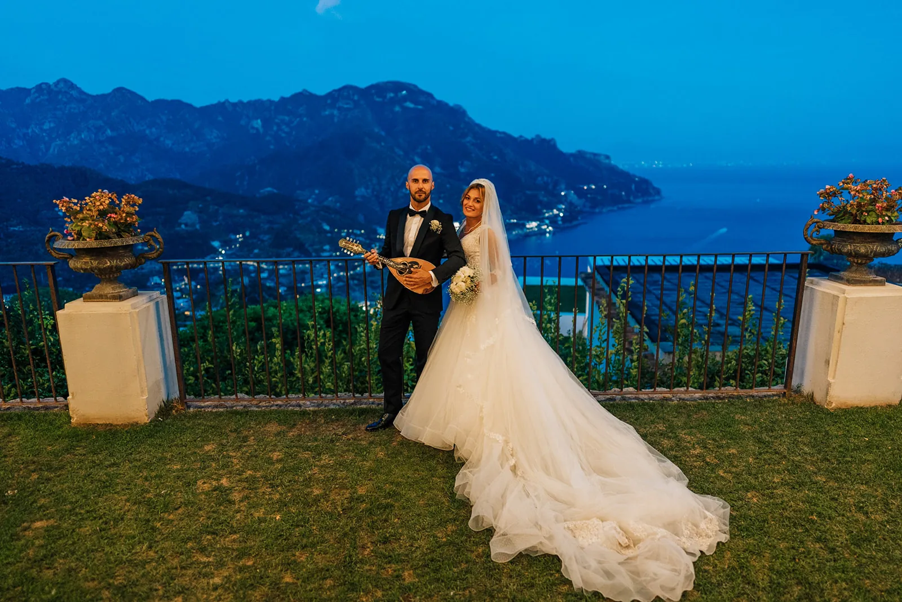
Natural reportage photography in Italy and abroad. Your full edited gallery, delivered in 48 hours.
Most wedding photographers make you wait a season. I deliver your complete, edited gallery two days after the wedding. Your wedding is €3,000 with 48-hour delivery. Happy to wait? Choose standard delivery for €2,500.
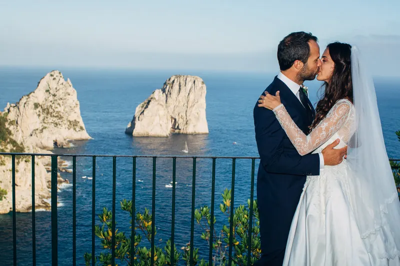
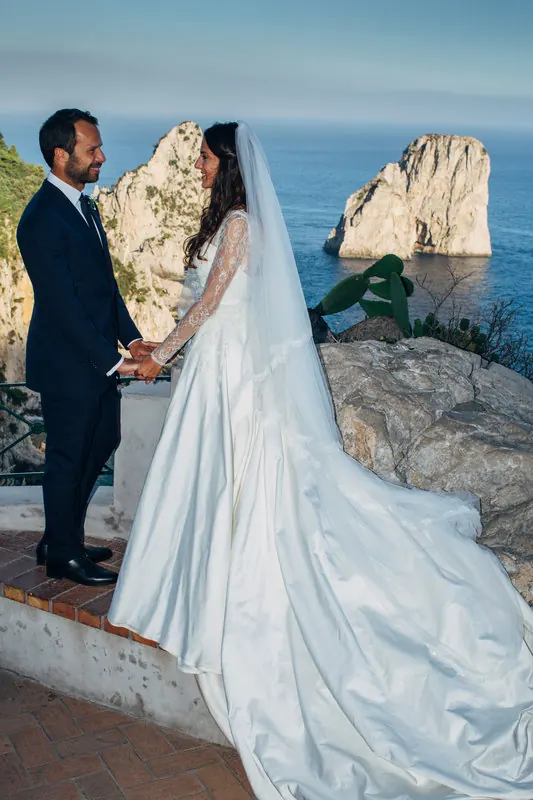
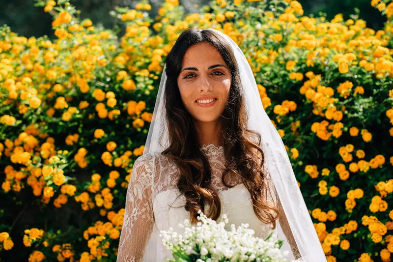
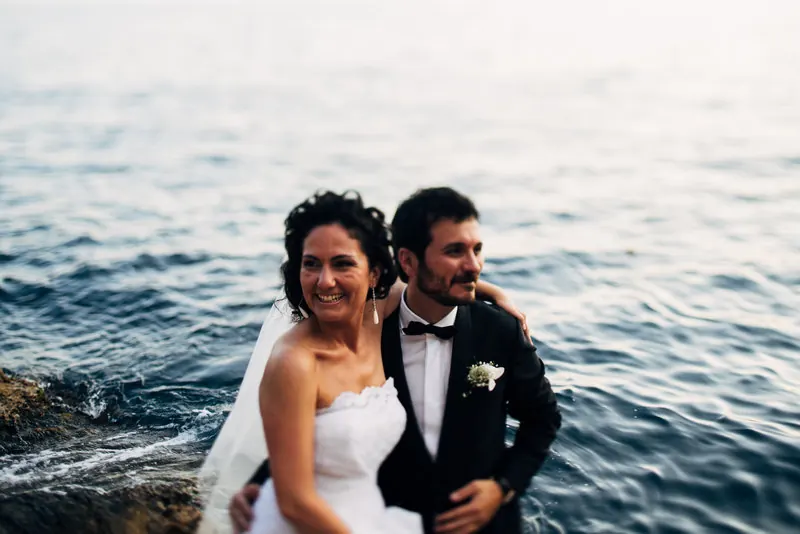
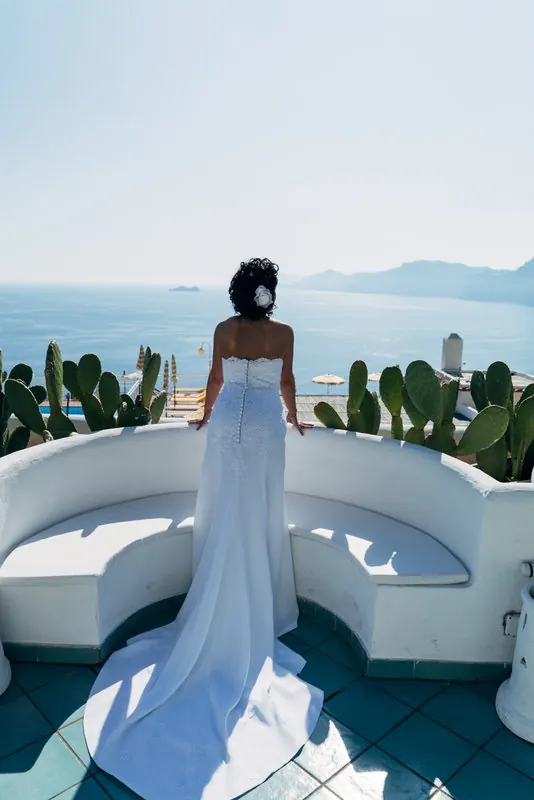
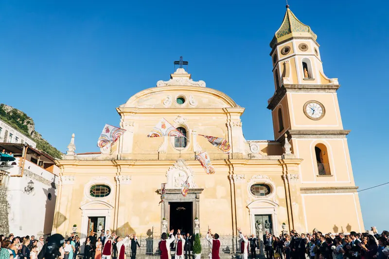
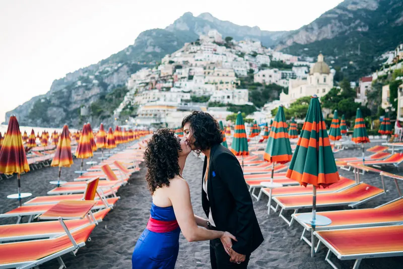
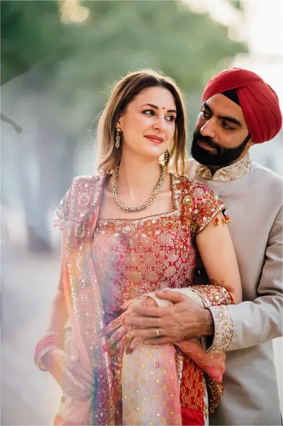
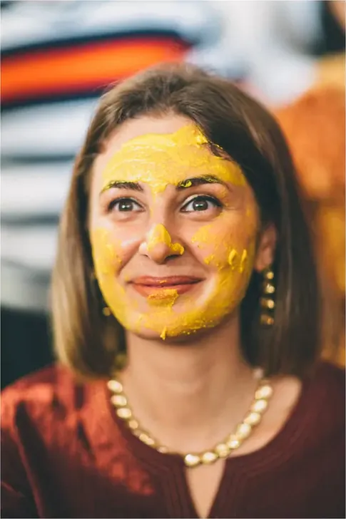
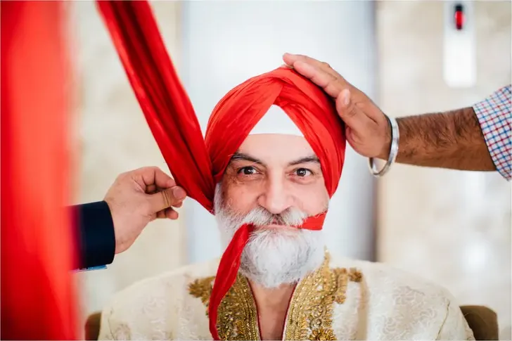
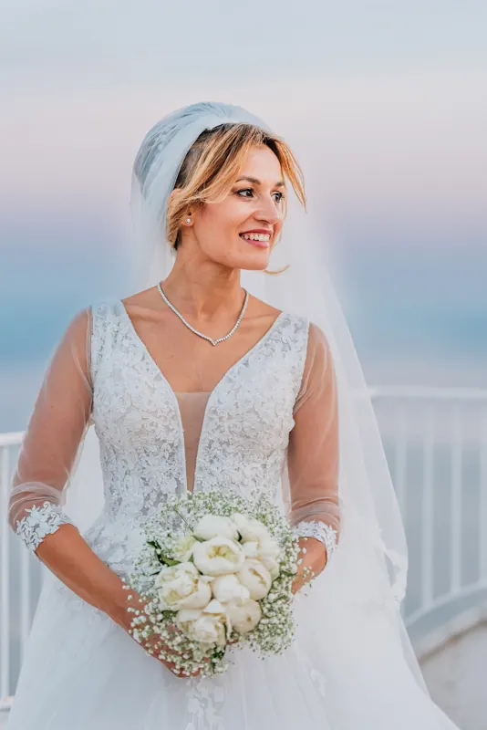
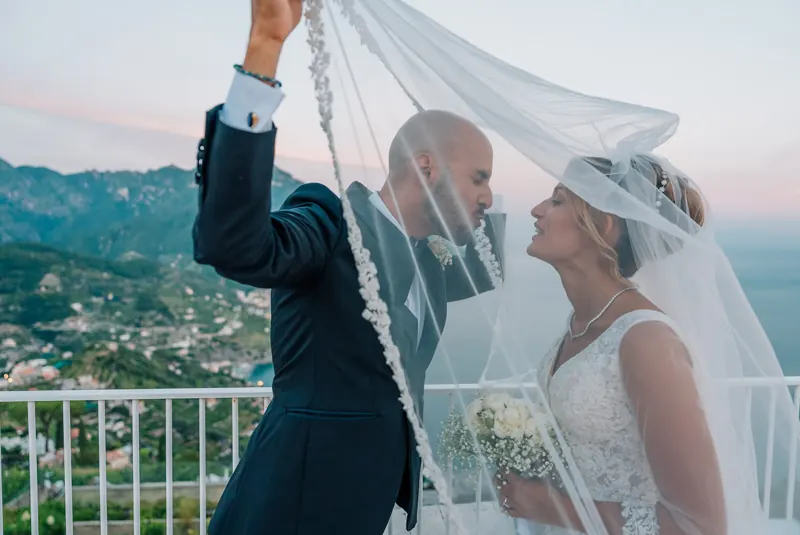

No lineups, no staged moments. I move quietly through your day and photograph what actually happens: the laugh before the vows, a grandmother's hands, the light on the sea.
Share the date and the place. I'll confirm availability and send you everything you need to decide.
hello@noor.studio